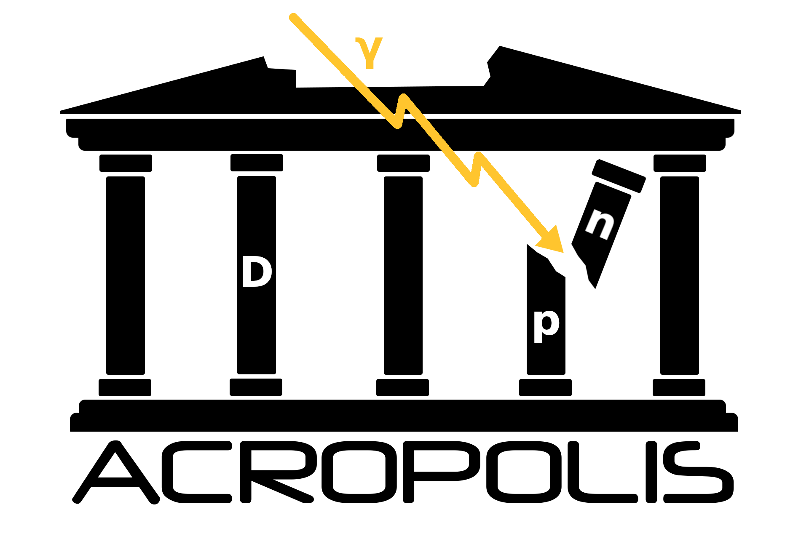

ACROPOLIS: A generiC fRamework fOr Photodisintegration Of LIght elementS
ACROPOLIS is a generic framework to calculate the evolution of the light-element abundances due to photodisintegration reactions induced by different BSM particles. With ACROPOLIS, the widely discussed cases of decays as well as annihilations can be run without prior coding knowledge within example programs. However, its modular structure also makes it possible to easily implement other BSM physics scenarios. ACROPOLIS is free software licensed under GPL3 and the full source code of the project is available at GitHub, but it can also be installed from PyPI or by downloading one of the different .tar.gz archives from the downloads sections of this website.
The easiest way to install ACROPOLIS, is to fetch it from PyPI via pip, i.e. by running the command
python3 -m pip install ACROPOLIS
The most recent version of the manual can be found here. In this document, you also find the most recent installation instructions.
When using this code for your own scentific publications, please cite
- ACROPOLIS: A generiC fRamework fOr Photodisintegration Of LIght elementS
Paul Frederik Depta, Marco Hufnagel, Kai Schmidt-Hoberg
[arXiv:2011.06518]
- Updated BBN constraints on electromagnetic decays of MeV-scale particles
Paul Frederik Depta, Marco Hufnagel, Kai Schmidt-Hoberg
[arXiv:2011.06519]
- BBN constraints on MeV-scale dark sectors. Part II. Electromagnetic decays
Marco Hufnagel, Kai Schmidt-Hoberg, Sebastian Wild
[arXiv:1808.09324]
v1.2.1 « Click here to download
(February 16, 2021)
- Fixed a bug in DecayModel. Results that have been obtained with older versions can be corrected by multiplying the parameter n0a with an additional factor 2.7012. All results of our papers remain unchanged.
- Updated the set of initial abundances to the most recent values returned by AlterBBN v2.2 (explicitly, we used failsafe=12)
v1.2 « Click here to download
(January 15, 2021)
- Speed improvements when running non-thermal nucleosynthesis (by a factor 7)
- Modified the directory structure by moving ./data to ./acropolis/data to transform ACROPOLIS into a proper package, which can be installed via python3 -m pip install . --user (also putting the executables decay and annihilation into your PATH)
- Added the decay of neutrons and tritium to the calculation
- For AnnihilationModel, it is now possible to freely choose the dark-matter density parameter (default is 0.12)
v1.1 « Click here to download
(December 1, 2020)
- For the source terms it is now possible to specify arbitrary monochromatic and continuous contributions, meaning that the latter one is no longer limited to only final-state radiation of photons
- By including additional JIT compilation steps, the runtime without database files was drastically decreased (by approximately a factor 15)
- The previously mentioned performance improvements also allowed to drop the large database files alltogether, which results in a better user experience (all database files are now part of the git repo and no additional download is required) and a significantly reduced RAM usage (∼900MB → ∼20MB)
- Fixed a bug, which could lead to NaNs when calculating heavily suppressed spectra with E0 ≫ me2/(22T)
- Added a unified way to print the final abundances in order to declutter the wrapper scripts. This makes it easier to focus on the actual important parts when learning how to use ACROPOLIS
- Moved from bytecode to simple text files for the remaining database file, as the former leads to unexpected behaviour on some machines
- Added additional info and warning messages for the user's convenience
v1.0 « Click here to download
(November 12, 2020)